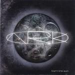

| Artist: | Ark |
| Title: | Burn The Sun |
| Label: | InsideOutMusic IOMCD 075 |
| Length(s): | 57 minutes |
| Year(s) of release: | 2001 |
| Month of review: | {04/2001] |
| 2) | Torn | 3.51 |
| 3) | Burn The Sun | 4.34 |
| 4) | Resurrection | 5.31 |
| 6) | Just A Little | 4.36 |
| 7) | Waking Hour | 4.15 |
| 9) | Feed The Fire | 3.56 |
| 10) | I Bleed | 4.03 |
| 11) | Missing You | 9.04 |
Torn is the next one up. This song opens very percussively and has a rather spooky ring to it. Mysterious piano sounds and a Levin-like zooming bass and again a strong performance by singer Lande make this an excellent track and something new as well. The articulation of Lande has something of Björk in it (but, do not be afraid, nothing childish).
Burn The Sun again brings us a good composition, but it does have little specifics to it that I can remark about. Resurrection opens as a ballad with the zooming bass of Coven and acoustic guitar. The vocal melody is again very good. The song turns to rock later on.
Absolute Zero opens with weird vocalizations; again I hear echoes of Björk here. The chorus is again in perfect order: powerful, melodic, sweeping. Time for something softer and sweeter. Fast acoustic Spanish guitar dominates this track. The chorus is rather poppy and in parts I am reminded of Queen's Innuendo.
The next track Waking Hour has some influences of Peter Gabriel in the vocal melody. After a rather relaxed beginning, the rhythm guitars set in. Again a great vocal melody and an emotional performance. Probably the best track so far. Quickly we move into the drawling Noose. Fastpaced and hectic, this is more of a metal track. I also hear some Indian influences in the melody lines here.
Feed The Fire has vocal influences from early Sting (his time in the Police). After I Bleed we come to longest track of the album Missing You. This is not a cover of John Waite, but a great desperate track with lots of string like synths. Strangely enough some Invisible Touch era percussion and synths, but also a very Freddy Mercury (There's No Reason For Living...) like climax to the vocals. Maybe he is the person who is missed, although the song also implies a love that went wrong, but some of the lines can be read in two ways: for instance "the man you never knew". A worthy conclusion to a great album.